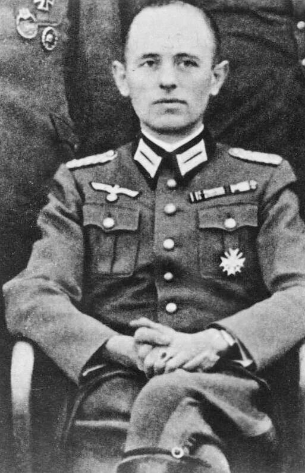
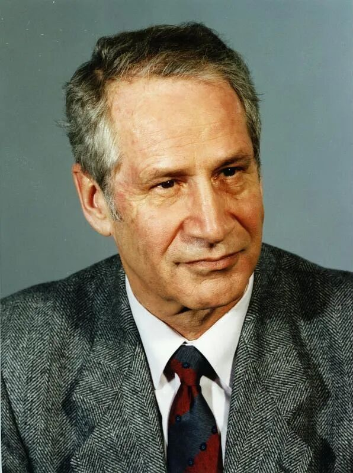

谍海轶闻｜冷战前线的德式情报网 Pay

本期介绍
二战结束后，德国走向分裂。西德成立了联邦情报局，前身是以莱因哈德·盖伦为核心的盖伦组织；而作为苏联卫星国的东德内部诞生了斯塔西，其工作方式深受苏联克格勃的影响，斯塔西局长马库斯·沃尔夫在结束了情报生涯后还出版了自己的回忆录《隐面人》。本期节目，程衍樑与沙青青畅聊东西德情报历史。
背景资料补充

莱因哈德·盖伦
1902年4月3日－1979年6月8日，纳粹德国陆军中将，负责德军在东线的情报工作，1946年至1956年为美国中央情报局相关的盖伦组织工作。是德国联邦情报局首任局长（1956年至1968年）。
1945年5月22日德军战败后，盖伦在巴伐利亚正式向美军投降，同时他向美军提供了大量的苏联相关的军事情报。1946年，盖伦组织在美国中央情报局的授意下成立，成为了当时CIA在对苏战场上唯一的耳目。1949年，康拉德·赫尔曼·约瑟夫·阿登纳召开内阁会议后随即面见了盖伦，从美国手中接过对盖伦组织的控制权，并逐渐将其改编成了联邦情报局。

马库斯·沃尔夫
1923年1月19日-2006年11月9日，德意志民主共和国国家安全部（简称斯塔西）侦察总局局长。
沃尔夫在斯塔西是仅次于国家安全部部长的第二号人物，他行事风格神秘，在很长一段时间内不曾有任何外界情报机构拍到过沃尔夫的照片，因此获称“无脸人”，冷战结束、东西德合并后，他的形象才逐渐浮出水面。
1997年，他出版了自传体回忆录《隐面人》，全面剖析了自己的成败功过，向读者展现了一个情报人员的一生。沃尔夫被广泛认为是勒卡雷小说的原型，但被勒卡雷本人多次否认。（点击收听 108期 谍海轶闻：从勒卡雷的间谍小说宇宙说开）
时间轴
01:35 西德联邦情报局的历史
05:11 盖伦在东部军事情报局
07:24 盖伦的实用派工作风格
12:57 从向美军投降到建立盖伦组织
19:41 盖伦组织的运作方式和特点
26:57 联邦德国成立后，盖伦组织和阿登纳之间的互相利用
29:48 50年代末期，盖伦组织逐渐式微
36:10 1962年《明镜》事件直接导致阿登纳与盖伦的关系破裂
39:02 双重间谍海因策·菲尔福的暴露也是对盖伦的巨大打击
39:45 离开盖伦后的联邦情报局
42:59 老德共成员构成了战后斯塔西组织里最主要的群体
46:07 克格勃对斯塔西的塑造
50:37 马库斯·沃尔夫的成长经历
53:26 60年代，斯塔西对西德的策略从守势转化为攻势
55:33 沃尔夫和菲尔比
57:28 占据道德高地的东德情报机构
01:00:35 纪尧姆的暴露导致了西德政府大洗牌
01:06:07 沃尔夫的回忆录中对苏联领袖们的描述
01:15:15 职业生涯晚期的沃尔夫对谍报工作心灰意冷
01:22:30 东德社会对苏联的微妙情绪
01:26:25 我们身边的斯塔西：申德勒加油站餐厅
节目音频